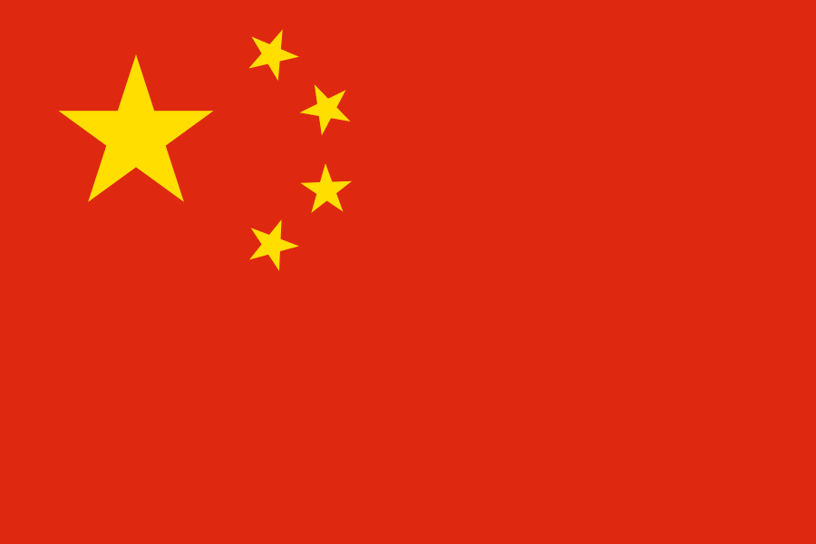
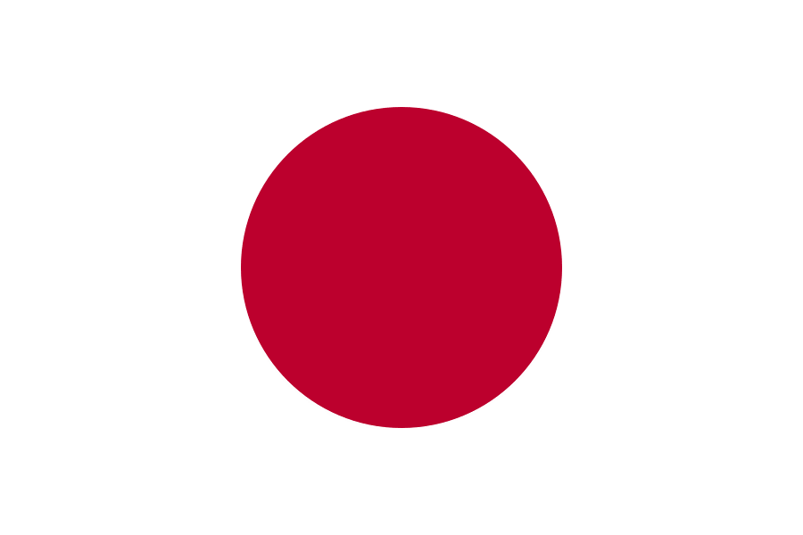
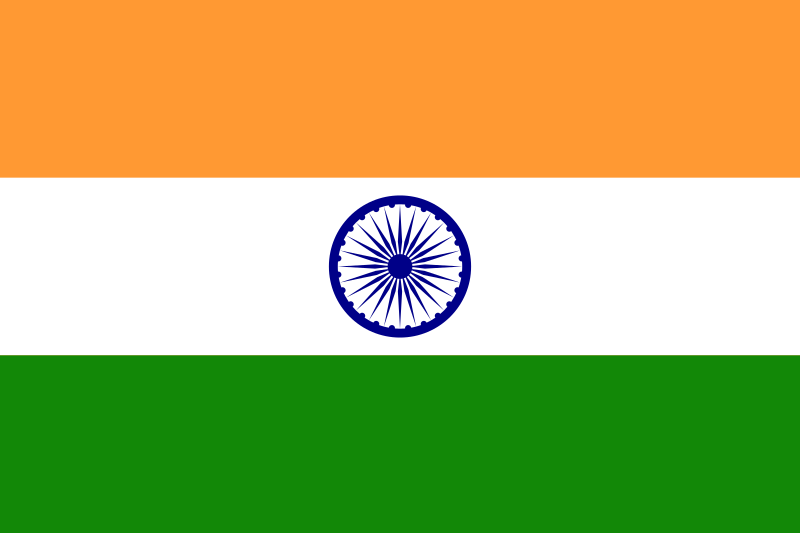
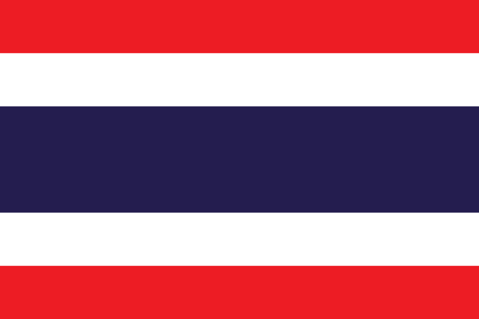

Voyage en Asie
Marque-pages
Direction vers Asie contemporaine
Direction vers la Chine
Direction vers le Japon
L'Asie (dont le nom vient d'une racine sémitique esch, désigne le lieu où se lève le Soleil) est un des sept continents ou une partie des supercontinents Eurasie ou Afro-Eurasie de la Terre. Avec 43 810 582 km2 de terres et 4,3 milliards d'habitants, l'Asie est le plus grand continent (8,6 % de la surface totale terrestre ou 29,4 % des terres émergées) et le plus peuplé (environ 60 % de la population mondiale). L'Asie est plus un concept culturel qu'une entité physique homogène.
Ce continent abrite le plus haut sommet du monde, l'Everest qui culmine à 8 848 mètres, ainsi que la plus haute tour du monde, Burj Khalifa, à Dubaï, d'une hauteur de 828 mètres. Il héberge aussi la terre émergée la plus éloignée de tout océan, située à 2 648 km de la côte la plus proche, au nord-ouest de la Chine (46° 17′ N, 86° 40′ E).
Asie contemporaine
Les colonies asiatiques ont été les premières à connaître l'indépendance grâce à des leaders tels que Jawaharlal Nehru et Mohandas Gandhi en Inde, Ho Chi Minh au Viêt Nam ou encore Sukarno et Hatta en Indonésie qui autoproclamèrent leurs pays respectifs indépendants en 1945, prenant les Empires coloniaux au dépourvu au sortir de la Seconde Guerre mondiale. Les Américains comprenant la situation (et pour éviter d'éventuelles tensions comme les Pays-Bas avec l'Indonésie ou encore la France avec ses colonies indochinoises), ils décidèrent de donner l'indépendance aux Philippines en 1946, qui fut le premier pays officiellement indépendant d'Asie.
Le Royaume-Uni suivra en 1947 en déclarant l'indépendance du Pakistan et de l'Inde (bien que les comptoirs portugais et français ne doivent pas être pas indépendants avant les années 1950 et 1960). Il s'ensuivit des tensions ethno-religieuses entre les deux pays. Le Royaume-Uni rendit également Ceylan et la Birmanie (1948) puis la Malaisie (1957), Singapour (1965), le Brunei (1984) et enfin Hong Kong (1997). Les Pays-Bas abandonnèrent l'Indonésie en 1949 à la suite d'une guérilla condamnée par l'ONU et qui se prolongera en conflit ethnique post-colonial. Quant à la France et au Portugal, ce n'est que tardivement qu'elles laissèrent leurs colonies. Pour la France, après une guerre contre l'Indochine qui l'épuise, elle donne l'indépendance au Laos, au Cambodge et au Viêt Nam en 1954 (ce dernier se divise en deux parties, Viêt Nam du Sud et Viêt Nam du Nord, ce qui les plongent dans une guerre pour récupérer la Cochinchine). Le Portugal, quant à lui, rendra son dernier comptoir qu'est Macao en 1999.
L'Asie contemporaine a été marquée par la création d'un État sioniste, Israël, en 1948 et cela entraînera des conflits d'ordre ethnico-religieux à plusieurs reprises. Les « superpuissances », c'est-à-dire les États-Unis et l'URSS, tentent de rallier à eux le continent, ce qui entraîne des tensions notamment en Corée (de 1950 à 1953) ; dans les années 1950 des révolutions éclatent au Moyen-Orient, comme en Syrie et en Irak puis, dans les années 1960, en Asie du Sud-Est comme la guerre du Viêt Nam (1967 à 1973), au Cambodge et au Laos ; l'Afghanistan sera envahi par l'URSS en 1979. La Chine deviendra un pays communiste en 1949 et s'ensuit la révolution culturelle en 1966.
La Chine

- La Chine, en forme longue la République populaire de Chine (RPC, chinois simplifié : 中华人民共和国 ; chinois traditionnel : 中華人民共和國 ; pinyin : Zhōnghuá Rénmín Gònghéguó, prononcé [tʂʊŋ˥xua˧˥ɻən˧˥mɪn˧˥kʊŋ˥˩xə˧˥kuɔ˧˥]), parfois appelée Chine populaire, est un pays d'Asie de l'Est. Avec plus d'un milliard trois-cent millions d'habitants, soit environ un sixième de la population mondiale, elle est le pays le plus peuplé du monde. Elle compte huit agglomérations de plus de dix millions d'habitants, dont la capitale Pékin, Shanghai, Canton, Shenzhen et Chongqing, ainsi que plus de trente villes d'au moins deux millions d'habitants. Avec 9 596 961 km2 selon les chiffres de l'ONU, la Chine est également le plus grand pays d'Asie orientale et le troisième ou quatrième plus grand pays du monde par superficie. La Chine s'étend des côtes de l'océan Pacifique au Pamir et aux Tian Shan, et du désert de Gobi à l'Himalaya et aux confins de la péninsule indochinoise.
- En 2014, la République populaire de Chine est la première puissance économique mondiale (en termes de PIB mesuré en parité de pouvoir d'achat). La Chine est également l'un des cinq membres permanents du Conseil de sécurité des Nations unies. Elle est également le premier exportateur mondial et dispose de l'arme nucléaire, de la plus grande armée du monde et du deuxième plus grand budget militaire. Gouvernée par le Parti communiste chinois, la Chine a adopté une « économie socialiste de marché » où capitalisme et contrôle politique autoritaire se côtoient en une formule spécifique. La constitution de la République populaire de Chine la définit comme « un État socialiste de dictature démocratique populaire, dirigé par la classe ouvrière et basé sur l'alliance des ouvriers et des paysans ». Le préambule de la constitution spécifie le rôle dirigeant du Parti communiste chinois et continue de citer officiellement le marxisme-léninisme comme idéologie de référence de l'État.
- La Chine est l'une des plus anciennes civilisations au monde, et est parfois citée comme la plus ancienne civilisation continue. Elle trouve son origine dans la vallée du fleuve Jaune puis s'est étendue vers le sud (conquête des territoires au sud du Yangzi Jiang dès la dynastie Han), vers l'ouest (premières incursions en Asie centrale sous les Han, extension temporaire jusqu'à la mer Caspienne sous les Tang, conquête du Xinjiang et du Tibet sous les Qing) et vers le nord (la dynastie Qing, d'origine mandchoue apporta à la Chine la Mandchourie et la Mongolie). Au cours de son histoire la Chine a été à plusieurs reprises divisée puis réunifiée ; elle a été par deux fois entièrement conquise par des étrangersf (par les Mongols au XIIIe siècle et par les Mandchous au XVIIe siècle), bien que ceux-ci aient fini par adopter les coutumes et le système administratif chinois pour gouverner l'empire. La dernière dynastie impériale, les Qing (la dynastie d'origine mandchoue qui régnait sur le pays depuis 1644), a connu une période de déclin durant la phase d'expansion coloniale des pays occidentaux, menant le pays de défaite en défaite à partir des guerres de l'opium. C'est seulement après la victoire contre l'armée japonaise en 1945 que la Chine a pu se libérer des interventions étrangères. La République populaire de Chine est proclamée le 1er octobre 1949, à la suite de la victoire militaire du Parti communiste chinois sur le Kuomintang. Elle se présente aujourd'hui comme une « république socialiste » et exerce un contrôle sur vingt-deux provincesg, cinq régions autonomes, quatre municipalités (dont Pékin) et deux régions administratives spéciales (Hong Kong et Macao).
- La Chine a connu une période néolithique et des âges des métaux plutôt tardive par rapport à l'Anatolie et à la Mésopotamie, mais elle a été et reste le foyer de nombreuses innovations dans les domaines des sciences et des arts. Elle est à l'origine de nombreuses inventions majeures telles la boussole, le papier, le billet de banque ou la poudre noire. La civilisation chinoise a fortement imprégné toute l'Asie de l'Est, notamment aux niveaux religieux (confucianisme, taoïsme et développement du bouddhisme chan), linguistique (les caractères chinois ont été utilisés dans toute la région et de nombreux mots chinois sont présents dans les langues qui y sont parlées), ainsi qu'artistique (calligraphie, peinture, imprimerie, instruments de musique).
Le Japon

- Le Japon, en forme longue l’État du Japon, en japonais Nihon ou Nippon (日本) et Nihon-koku ou Nippon-koku (日本国) respectivement, est un pays insulaire de l’Asie de l’Est. Situé entre l’océan Pacifique et la mer du Japon, à l’est de la Chine, de la Corée et de la Russie, et au nord de Taïwan. Étymologiquement, les kanjis (caractères chinois) qui composent le nom du Japon signifient « pays (国, kuni) d’origine (本, hon) du Soleil (日, hi) »; c’est ainsi que le Japon est désigné comme le « pays du soleil levant ».
- Le Japon forme, depuis 1945, un archipel de 6 852 îles de plus de 100 m2, dont les quatre plus grandes sont Hokkaidō, Honshū, Shikoku, et Kyūshū représentant à elles seules 95 % de la superficie terrestre du pays. L’archipel s’étend sur plus de trois mille kilomètres. La plupart des îles sont montagneuses, parfois volcaniques; par exemple, le plus haut sommet du Japon, le mont Fuji (3 776 m), est un volcan (inactif depuis 1707). Le Japon est le dixième pays le plus peuplé du monde, avec environ 127 millions d’habitants pour 377 488 km2 (337 hab./km2), dont l'essentiel est concentré sur les étroites plaines littorales. Le Grand Tokyo, qui comprend la capitale Tokyo et plusieurs préfectures environnantes, est la plus grande région métropolitaine du monde, avec plus de 35 millions d’habitants. La ville a été première place financière mondiale en 1990.
- Les recherches archéologiques démontrent que le Japon était peuplé dès la période du Paléolithique supérieur. Les premières mentions écrites du Japon sont de brèves apparitions dans des textes de l’histoire chinoise du Ier siècle. L’histoire du Japon est caractérisée par des périodes de grande influence dans le monde extérieur suivies par de longues périodes d’isolement. Depuis l’adoption de sa constitution en 1947, le Japon a maintenu une monarchie constitutionnelle avec un empereur et un parlement élu, la Diète.
- Le Japon est la troisième puissance économique du monde pour le PIB nominal et la quatrième pour le PIB à parité de pouvoir d’achat. Il est aussi le quatrième pays exportateur et le sixième pays importateur au monde. Acteur majeur du commerce international et puissance épargnante, il a ainsi accumulé une position créancière nette vis-à-vis du reste du monde (en) de plus de 325 000 milliards de yens, le plaçant en première position devant la Chine. C’est un pays développé, avec un niveau de vie très élevé (dix-septième IDH le plus élevé) et la plus longue espérance de vie au monde (selon les estimations de l’ONU). Mais ce tableau idyllique ne doit pas masquer d’importants problèmes qui pèsent sur l’avenir du pays : le Japon souffre d’un des taux de natalité les plus bas du monde, très en dessous du seuil de renouvellement des générations. Le pays est actuellement en déclin démographique. C’est également le pays pour lequel le poids de la dette publique brute est le plus important au monde, cette dernière s’élève en 2014 à 233 % du PIB.
Besoin d'informations supplémentaires sur le Japon?
Visionner/Télécharger le PDF (en anglais) officiel du JNTO (Japan National Tourism Organization)
Source (en anglais) : http://www.jnto.go.jp
| Pays et territoires | Capitale | Superficie (km²) | Population (est. 2013) | Densité (hab./km²) |
| Chine (RPC) |
Beijing ou Pékin |
9 596 960 |
1 385 566 537 |
144 |
 Corée du Sud Corée du Sud |
Séoul |
99 274 |
49 262 598 |
496 |
|  Inde |
New Delhi |
3 287 590 |
1 252 139 596 |
381 |
 Indonésie Indonésie |
Jakarta |
1 919 440 |
249 865 631 |
130 |
| Japon |
Tokyo |
377 835 |
127 143 577 |
337 |
|  Thaïlande |
Bangkok |
514 000 |
67 010 502 |
130 |